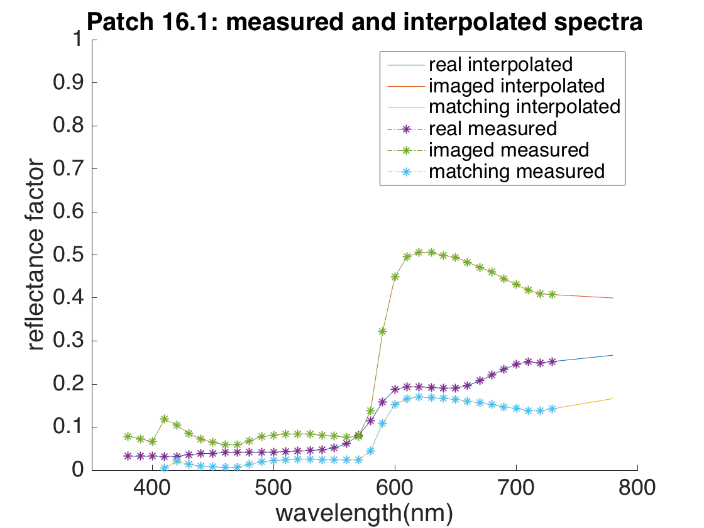

cie = loadCIEData()
cm_lams_norm = 410:10:730;
cm_lams_trans = 380:10:730;
cm_h_offset_norm = 54;
cm_h_offset_trans = 57;
data = importSP('161.sp');
real_161 = data/100;
data = importSP('161-imaged.sp');
imaged_161 = data/100;
data = importSP('161-created.sp');
matching_161 = data/100;
data = importSP('162.sp');
real_162 = data/100;
data = importSP('162-imaged.sp');
imaged_162 = data/100;
data = importSP('162-created.sp');
matching_162 = data/100;
real161_interp = interp1(cm_lams_trans, real_161, cie.lambda(:),'linear','extrap');
imaged161_interp = interp1(cm_lams_trans, imaged_161, cie.lambda(:),'linear','extrap');
matching161_interp = interp1(cm_lams_trans, matching_161, cie.lambda(:),'linear','extrap');
real162_interp = interp1(cm_lams_trans, real_162, cie.lambda(:),'linear','extrap');
imaged162_interp = interp1(cm_lams_trans, imaged_162, cie.lambda(:),'linear','extrap');
matching162_interp = interp1(cm_lams_trans, matching_162, cie.lambda(:),'linear','extrap');
clf()
hold on
plot(cie.lambda,real161_interp);
plot(cie.lambda,imaged161_interp);
plot(cie.lambda,matching161_interp);
plot(cm_lams_trans,real_161, '-.*');
plot(cm_lams_trans,imaged_161, '-.*');
plot(cm_lams_trans,matching_161, '-.*');
axis([350 800 0 1])
xlabel('wavelength(nm)')
ylabel('reflectance factor')
legend('real interpolated', 'imaged interpolated', 'matching interpolated',...
'real measured', 'imaged measured', 'matching measured')
title('Patch 16.1: measured and interpolated spectra')
set(gca,'fontsize', 18);
figure()
hold on
plot(cie.lambda,real162_interp);
plot(cie.lambda,imaged162_interp);
plot(cie.lambda,matching162_interp);
plot(cm_lams_trans,real_162, '-.*');
plot(cm_lams_trans,imaged_162, '-.*');
plot(cm_lams_trans,matching_162, '-.*');
axis([350 800 0 1])
xlabel('wavelength(nm)')
ylabel('reflectance factor')
legend('real interpolated', 'imaged interpolated', 'matching interpolated',...
'real measured', 'imaged measured', 'matching measured')
title('Patch 16.2: measured and interpolated spectra')
set(gca,'fontsize', 18);
xyz161RealCalc = ref2XYZ(real161_interp, cie.cmf2deg, cie.illD50);
xyz161ImagedCalc = ref2XYZ(imaged161_interp, cie.cmf2deg, cie.illD50);
xyz161MatchingCalc = ref2XYZ(matching161_interp, cie.cmf2deg, cie.illD50);
xyz162RealCalc = ref2XYZ(real162_interp, cie.cmf2deg, cie.illD50);
xyz162ImagedCalc = ref2XYZ(imaged162_interp, cie.cmf2deg, cie.illD50);
xyz162MatchingCalc = ref2XYZ(matching162_interp, cie.cmf2deg, cie.illD50);
xyz161Real = [12.671117 9.367839 3.273952];
xyz161Imaged = [27.885365 18.360140 5.827478];
xyz161Matching = [9.108034 5.936318 0.878260];
xyz162Real = [6.704818 5.610822 3.127515];
xyz162Imaged = [7.878567 5.511291 2.580699];
xyz162Matching = [2.648019 1.806134 0.354015];
xyY161RealCalc = XYZ2xyY(xyz161RealCalc(1),xyz161RealCalc(2),xyz161RealCalc(3));
xyY161ImagedCalc = XYZ2xyY(xyz161ImagedCalc(1),xyz161ImagedCalc(2),xyz161ImagedCalc(3));
xyY161MatchingCalc = XYZ2xyY(xyz161MatchingCalc(1),xyz161MatchingCalc(2),xyz161MatchingCalc(3));
xyY162RealCalc = XYZ2xyY(xyz162RealCalc(1),xyz162RealCalc(2),xyz162RealCalc(3));
xyY162ImagedCalc = XYZ2xyY(xyz162ImagedCalc(1),xyz162ImagedCalc(2),xyz162ImagedCalc(3));
xyY162MatchingCalc = XYZ2xyY(xyz162MatchingCalc(1),xyz162MatchingCalc(2),xyz162MatchingCalc(3));
xyY161Real = XYZ2xyY(xyz161Real(1),xyz161Real(2),xyz161Real(3));
xyY161Imaged = XYZ2xyY(xyz161Imaged(1),xyz161Imaged(2),xyz161Imaged(3));
xyY161Matching = XYZ2xyY(xyz161Matching(1),xyz161Matching(2),xyz161Matching(3));
xyY162Real = XYZ2xyY(xyz162Real(1),xyz162Real(2),xyz162Real(3));
xyY162Imaged = XYZ2xyY(xyz162Imaged(1),xyz162Imaged(2),xyz162Imaged(3));
xyY162Matching = XYZ2xyY(xyz162Matching(1),xyz162Matching(2),xyz162Matching(3));
cie = loadCIEData;
figure;
hold on;
line_weight = 1.5;
set(gca, 'FontSize', 14);
set(gca, 'LineWidth', line_weight);
axis('equal');
axis([0,0.9,0,0.9]);
xlabel('x');
ylabel('y');
axis([0 0.9 0 0.9],'xy');
set(gca, 'XTick', 0:0.3:0.9);
set(gca, 'XTickLabel', [ 0:0.3:0.9 ] );
set(gca, 'YTick',0:0.3:0.9);
set(gca, 'YTickLabel', [ 0:0.3:0.9 ] );
set(gca, 'XMinorTick', 'on');
set(gca, 'YMinorTick', 'on');
locus = XYZ2XyYMany(cie.cmf2deg');
plot(locus(1,[1:81,1]),locus(2,[1:81,1]), 'k-', 'LineWidth', line_weight);
l = [380 450 500 525 550 575 600 625 650 780];
for j=1:size(l,2),
p = find(cie.lambda == l(j));
moveUp = 0.02;
if l(j) == 450,
moveUp = 0.03;
end
if l(j) == 780,
moveUp = 0.0;
end
text(locus(1,p)+.02,locus(2,p)+moveUp,num2str(l(j)));
plot(locus(1,p),locus(2,p),'ko','MarkerFaceColor','k');
end
hold on
text(0.31271-0.03,0.32902+0.03,'D65');
plot(0.31271,0.32902,'ko','MarkerFaceColor','k');
text(0.34567-0.03,0.35850+0.03,'D50');
plot(0.34567,0.35850,'ko','MarkerFaceColor','k');
text(0.44757,0.40745+0.03,'A');
plot(0.44757,0.40745,'ko','MarkerFaceColor','k');
l1 = plot(xyY161RealCalc(1),xyY161RealCalc(2), 'ko','MarkerFaceColor','r');
l2 = plot(xyY161ImagedCalc(1),xyY161ImagedCalc(2), 'g','MarkerFaceColor','y');
l3 = plot(xyY161MatchingCalc(1),xyY161MatchingCalc(2), 'c','MarkerFaceColor','m');
l4 = plot(xyY162RealCalc(1),xyY162RealCalc(2), 'ko','MarkerFaceColor','c');
l5 = plot(xyY162ImagedCalc(1),xyY162ImagedCalc(2), 'g','MarkerFaceColor','b');
l6 = plot(xyY162MatchingCalc(1),xyY162MatchingCalc(2), 'c','MarkerFaceColor','g');
legend([l1 l2 l3 l4 l5 l6],{'16.1 real', '16.1 imaged', '16.1 matching',...
'16.2 real', '16.2 imaged', '16.2 matching'})
plot(xyY161Real(1),xyY161Real(2), '*','MarkerFaceColor','r');
plot(xyY161Imaged(1),xyY161Imaged(2), '*','MarkerFaceColor','y');
plot(xyY161Matching(1),xyY161Matching(2), '*','MarkerFaceColor','m');
plot(xyY162Real(1),xyY162Real(2), '*','MarkerFaceColor','c');
plot(xyY162Imaged(1),xyY162Imaged(2), '*','MarkerFaceColor','b');
plot(xyY162Matching(1),xyY162Matching(2), '*','MarkerFaceColor','g');
cie =
lambda: [1x81 double]
cmf2deg: [81x3 double]
cmf10deg: [81x3 double]
eigD: [81x3 double]
illA: [81x1 double]
illC: [81x1 double]
illD50: [81x1 double]
illD65: [81x1 double]
illF: [81x12 double]
illE: [81x1 double]
